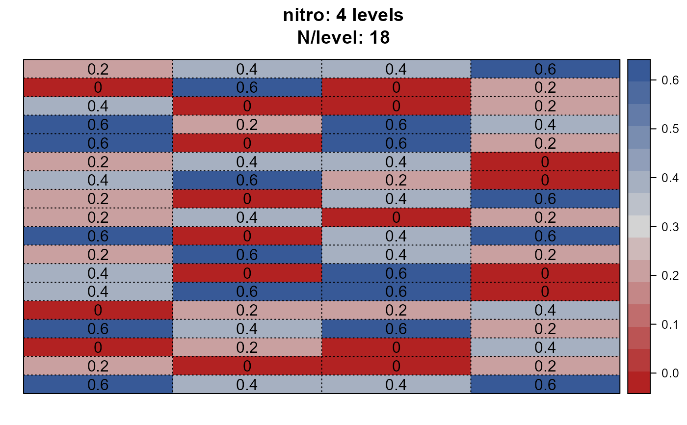
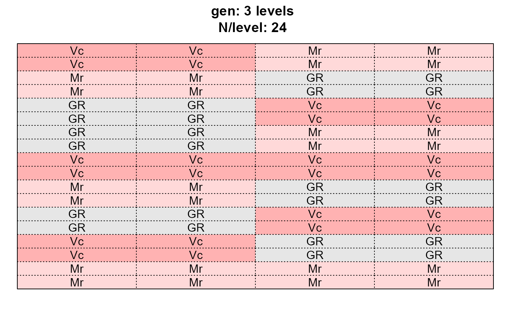
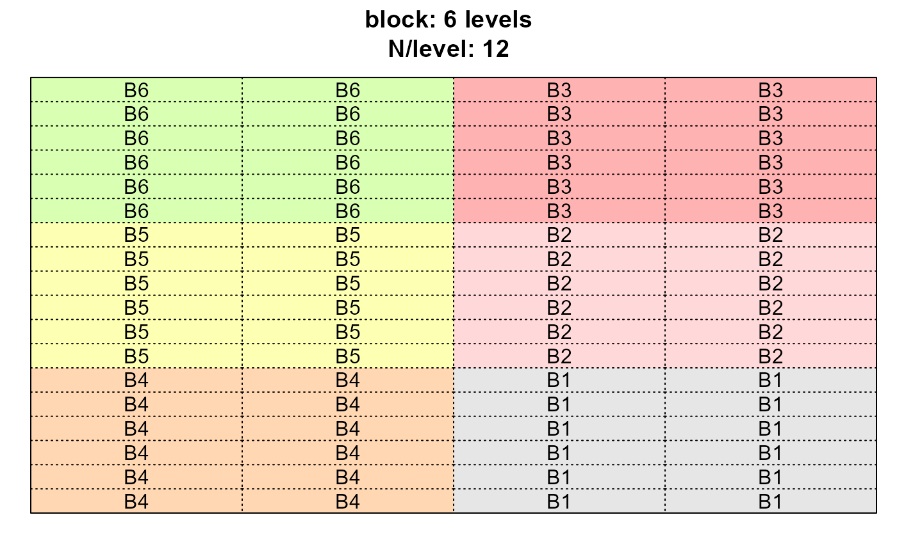

desplot::desplot() across multiple columnsR/desplot_across.R
desplot_across.RdThe goal of this function is to allow the user a quick and easy glance at the experimental layout of a trial by creating multiple desplots at once - one for each variable that is provided (see example below).
A data frame.
<tidy-select> Variables/column names for which a desplot should be created. You can use tidyselect helpers like starts_with(), ends_with(), contains(), etc.
A formula like x*y|location, i.e. the right-hand side of the formula yield~x*y|location that would usually be passed to desplot::desplot(form = ...). Note that x and y are numeric and the default is "col + row".
Language for plots labels.
Can either be "none", "short" or "long". For the respective var, it gives information about the number of levels and their respective frequency in the data.
see desplot::desplot() documentation - set to opinionated default here
see desplot::desplot() documentation - set to opinionated default here
see desplot::desplot() documentation - set to opinionated default here
Other arguments passed to desplot::desplot().
A list of desplots.
library(BioMathR)
# Using explicit column names
dps <- desplot_across(data = agridat::yates.oats,
vars = c("nitro", "gen", "block"),
cex = 1)
# Using tidyselect helpers
dps2 <- desplot_across(data = agridat::yates.oats,
vars = starts_with("n"),
cex = 1)
dps$nitro

dps$gen

dps$block
